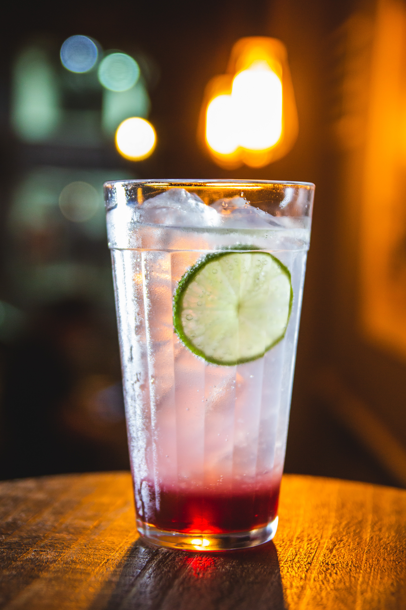

LE BAR DE SYL
Le Bar de Syl,
une adresse parisienne de cocktails haute couture. Cadre feutré, ambiance jazzy et glamour pour apprécier en toute suptilité nos délicieuses créations. Retrouvez ci-dessous mes incontournables qui vous électriseront et réveilleront vos papilles.

Cocktail de fruits
Coconut Cocktail

Mango Cocktail

Kiwi Cocktail

Long Drink
Blue Margarita Cocktail

Negroni Cocktail

Cosmopolitan revisité
Violete Blue Gin Cocktail

Virgin Cocktail
Virgin Cassis Cocktail

et sa limonade maison
Virgin Ice Tea Cocktail

son zeste de citron et sa branche de romarin
Virgin Smoothie Cocktail

ce cocktail estival et gourmand